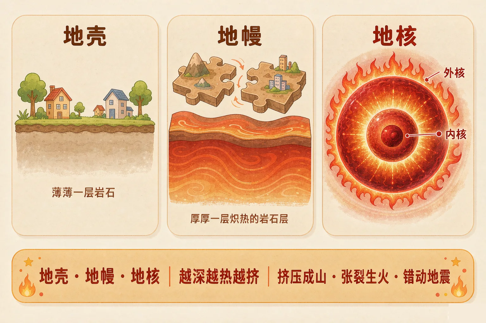
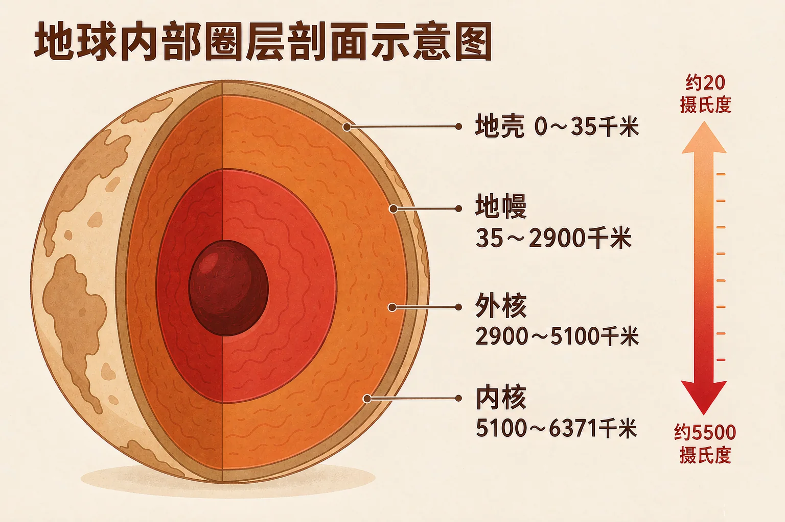
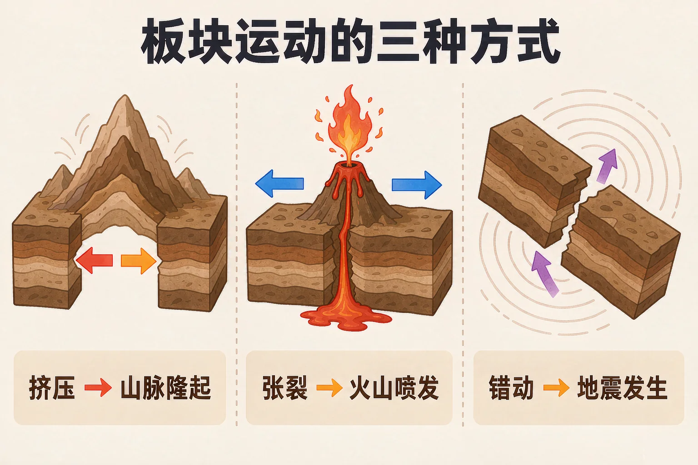

Gallery
v1.0.0 · skill v7.22.0
小学五年级 · 地球与宇宙科学 · 地球系统
如果一直往地下挖，穿过泥土和岩石，最后会挖到什么？

选一个你真正好奇的问题，后面的探究都会围着它转。
选择或输入后，这节课会围绕你的问题展开。
先凭直觉选一个，选完立刻看到解释——错了也没关系，正好知道要重点听哪里。
1. 如果一直往地下挖，穿过泥土和岩石，最后会挖到什么？
地球内部是实心的，分成三个圈层，越往深处温度越高、压力越大。错因提醒：科幻片里的地下空洞是想象，真实的地球内部被岩石和金属填得满满的。
2. 从地面往下走，温度会怎么变化？
越往深处越热，地心附近的温度比炼钢炉还高得多。错因提醒：不要误认为地下深处是阴冷的，正好相反，那里又热又挤。
3. 火山喷发和地震为什么常常出现在同一片地方？
火山和地震大多集中在板块交界处。这个问题先记在心里，等下我们要亲手演示板块运动。
把地球切开，从外往里数，一共三个大圈层：地壳、地幔、地核。越往深处走，温度越高，压力越大。
地壳
最外面薄薄的一层岩石，我们就站在它上面。
地幔
最厚的一层，上部又热又软，能非常缓慢地流动。
地核
最中心，温度最高、压力最大，外面是液态，里面是固态。

🔍 深层理解 换个角度再看一遍这件事，看看能不能说出背后的原理。
看见它：地壳很薄，最厚的地方也只有几十千米；地幔厚达两千多千米，占了地球体积的绝大部分。
解释它：为什么越深越热？因为地球内部藏着大量热量，外面的岩石又像一层厚棉被，把热量捂在里面散不出去。
迁移它：我们虽然挖不到地心，却能靠地震波给地球做「透视」——地震波穿过不同圈层时速度会变化，科学家就是这样知道地球分层的。
拖动滑块，让探针从地面一直往下走。右边会实时显示你所在的圈层、温度有多高、压力有多大。
地壳不是完整的一整块，而是分成好多大块，叫做板块。它们趴在又热又软的软流层上，每年只移动几厘米。

误认为一地震就是板块在挤压。其实三种运动都可能引发地震，判断方向还要看有没有山脉隆起、有没有火山喷发。记住这句口诀：挤压成山，张裂生火，错动地震。
点下面的三个按钮，让两块板块做出不同的运动，观察地面上出现了什么。
题目：有一座小岛，岛上经常发生地震，山上还不断有岩浆冒出来。请判断这里的地壳可能在发生什么运动，并说明理由。
只看到「地震」就答成挤压，是这道题最常见的错误。地震在三种运动里都可能发生，所以必须再看有没有火山、有没有山脉，才能判断方向。这正是把现象和原因搞混的典型表现。
先凭直觉选一个，选完立刻看到解释——错了也没关系，正好知道要重点听哪里。
1. 下面哪句话是正确的？
从外到里的顺序是地壳、地幔、地核。错因提醒：把地壳和地幔的里外顺序搞混，是这一课最常见的错误。
2. 越往地球深处走，温度和压力会怎样变化？
深处被上面的岩石压着，越深越挤，同时热量也越攒越多。错因提醒：容易误认为压力会随深度减小，其实正好相反。
3. 喜马拉雅山脉是怎么形成的？
高大的山脉主要由板块挤压形成，而且它现在还在缓慢长高。错因提醒：不要把它和火山堆出来的山搞混——火山是岩浆喷出后堆成的，形状和成因都不一样。
科技节的海报上要配一段讲解稿，请带着读者从地面一路走到地心。
每一站都要写清四件事：圈层名字 · 大约有多深 · 温度大概多少 · 那里是什么状态。
第一步：排出路线顺序
先经过哪一层，再经过哪一层，最后到哪一层？把它们写下来。
第二步：写成三到五句话的讲解稿
先凭直觉选一个，选完立刻看到解释——错了也没关系，正好知道要重点听哪里。
1. 有的地方能打出上千米深的深井，井水抽上来就是热的。这个现象说明：
井越深，水接触到的岩层越热，所以抽上来的水温度更高。
2. 海底有一条长长的山脉，中间有一道裂口，不断有岩浆涌出来形成新的海底。这里最可能在发生：
有岩浆上涌、有裂口，是张裂的典型表现。错因提醒：不要一看到「山」就判断成挤压——海底山脉很多是岩浆堆出来的。
3. 两个板块交界处，岩层先被卡住很多年，某一天突然滑动了一下，地面剧烈震动。这是：
水平错动时岩层先卡住、蓄积能量，突然滑动就释放出能量，形成地震。
回到开头的问题：往地心挖下去，你不会挖到一个空洞，而是会穿过越来越热、越来越密的岩石和金属——先是薄薄的地壳，再是厚厚的地幔，最后是又烫又挤的地核。
给别人讲一遍：请用"地壳、地幔、地核、板块"这四个词，说清火山和地震是从哪里来的。
三层练习，做完第一、二层就算通关；第三层留给愿意继续探索的同学。
⭐ 基础巩固（必做）
⭐⭐ 能力应用（必做）
⭐⭐⭐ 迁移挑战（选做）
左边是学它之前要先会的，右边是学会之后可以继续探索的，下面是同一领域的伙伴知识。
图谱正在加载：首次进入需下载知识索引（约 1–3 秒），加载完成后本行会自动消失。